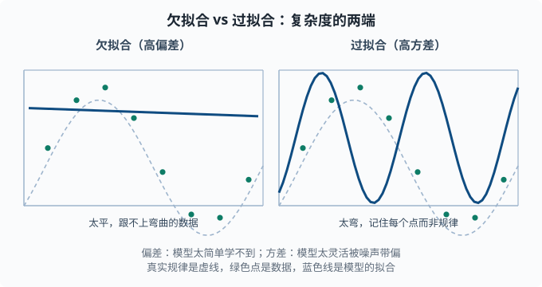

偏差-方差与正则化：越复杂不一定越好
目标：理解机器学习最核心的张力——过拟合与欠拟合。读完这一页，你能拆解"误差 = 偏差 + 方差 + 噪声"，解释 L1/L2 正则化分别怎么起作用、各有什么偏好，并知道如何用它们控制模型复杂度。
为什么"越复杂不一定越好"
一个直觉：模型越复杂，它在训练数据上往往越准。但如果它只是把训练数据背下来，拿到新数据就失灵。这里的核心问题是权衡：模型要有足够能力学到真实规律（不能太简单），又不能太灵活到把噪声也当规律（不能太复杂）。
一个关键心态：
误差不是单一来源。真正专业的做法是把它拆成"因为太简单没学会"和"因为太灵活被噪声带偏"两部分，然后对症下药。
误差三件套：偏差 + 方差 + 噪声
一个模型在测试集上的总误差可以分解成三部分：
总误差 = 偏差²(bias) + 方差(variance) + 不可约噪声(noise)
换个通俗说法：
- 偏差：模型"固有的天真程度"。简单模型常假设不对，偏离真实规律 → 高偏差。
- 方差：模型"对训练数据变化的敏感程度"。复杂模型换个训练集结果就大变 → 高方差。（这里借用了 01-03 期望与方差 里"方差衡量波动"的直觉：把"换一批训练数据"当成随机性，预测结果随之晃动越剧烈，方差越大。）
- 噪声：数据本身不可预测的部分，任何模型都无法消除。
直觉例子：打靶
- 高偏差、低方差：弹孔都集中在偏离靶心的一小片——很稳定但整体打偏（欠拟合，总是错）。
- 低偏差、高方差：弹孔围绕靶心但四散——平均准但每次不稳定（过拟合，换数据就变）。
- 低偏差、低方差：弹孔稳定地集中在靶心——这才是理想的。
这个"精准 vs 稳定"的对比是理解全部复杂度的钥匙。
过拟合与欠拟合
| 欠拟合 | 过拟合 | |
|---|---|---|
| 训练误差 | 高 | 很低 |
| 测试误差 | 高 | 高 |
| 原因 | 模型太简单 | 模型太复杂 |
| 偏差 | 高 | 低 |
| 方差 | 低 | 高 |
| 对策 | 加能力/换复杂模型 | 加正则/减复杂度/加数据 |
关键信号：测试误差的走向。
- 训练和测试都差 → 欠拟合，还不够力。
- 训练很好但测试差 → 过拟合，太能背。
- 训练好、测试也好 → 状态合适。

左图是太简单的模型：虚线表示真实规律，蓝线过于平坦，跟不上弯曲的数据（高偏差）；右图是太复杂的模型：蓝线弯弯绕绕穿过每个训练点，把噪声也记住了（高方差）。两个极端都不是我们想要的。
flowchart TB
S["训练与验证误差怎么走？"] --> B["都高，两线贴近"]
S --> C["训练低、验证高，中间有沟"]
B --> B1["高偏差：加能力、去正则、换复杂的模型"]
C --> C1["高方差：加数据、加正则、减小容量"]
如何"调复杂度"
复杂度不是二选一，而是一个旋钮，可以从两个方向拧：
- 改变模型容量：特征更多、层更多、树更深 → 容量变大。容量（capacity）指"模型能表达多复杂的关系"——容量小的模型只画得出直线，容量大的能画出任意弯的曲线。
- 正则化：不改变模型结构，但惩罚过度复杂的参数（正则化 = 往损失里额外加一项"参数太大致罚"，逼模型保持简单）。
对深度模型，容量通常通过调结构（层数/宽度）来变；对表格模型，往往靠正则化来抑制过拟合而不牺牲表达能力。
L2 正则化（岭回归）
L2 是在损失函数里给"权重的平方和"加惩罚（这个方法叫岭回归，ridge regression——名字里的"岭"指损失曲面被 λ 项垫起了一道脊，把极端权重压下去）：
L_target = MSE + λ · Σ w_i²
这里 λ（正则强度）越大，越逼权重往 0 附近缩——但不完全等于 0，只是整体变小。L2 的效果：
- 惩罚"参数很大"的模型 → 权重向 0 收缩。
- 让模型更"平滑"、对噪声的每个特征不那么敏感 → 降方差。
- 好处是损失仍可导、凸性好，优化稳定。
直觉：L2 让模型"不要把所有赌注押在某个特征上"，把权重均匀地分摊、压小。
L1 正则化（Lasso）
L1 惩罚的是权重的绝对值之和：
L_target = MSE + λ · Σ |w_i|
L1 的独特之处：它会迫使部分权重精确地变成 0，实现特征选择（自动挑出有用的特征、丢弃没用的）。Lasso 就是"用 L1 正则化的线性回归"的名字（lasso 意为"套索"——它像套索一样把一部分系数整个套住拖到 0），lasso 自己会"挑出"哪些特征真正有用，把没用的清零。
为什么 L1 会让权重为零而 L2 不会？
- L2 的惩罚是平方，越靠近 0 惩罚越小，权重停在"小但不为 0"。
- L1 的惩罚是绝对值，在 0 处有一个"尖角"，梯度恒定；最小化会在尖锐处把权重压到 0。
几何上，L1 的约束区域是"菱形"（角落在轴上），最优解更容易落在轴上（稀疏）；L2 是"圆"，最优解一般不在轴上。01-01 里提过 L1 鼓励稀疏——正是这里。
两种正则对比
| L1 (Lasso) | L2 (Ridge) | |
|---|---|---|
| 惩罚项 | Σ|w_i| |
Σ w_i² |
| 权重要么 | 可能精确变 0（稀疏） | 变小但一般不为 0 |
| 主要作用 | 特征选择、稀疏解 | 权重收缩、防过拟合 |
| 合适场景 | 特征多、怀疑很多无关 | 各特征都有一点用 |
实操里常两者组合（ElasticNet——L1 与 L2 按比例混合的正则化，兼得"稀疏选择"与"稳定收缩"）。而"深度学习里的权重衰减（weight decay）"——每步更新后把权重按一个小比例整体缩小——本质就是 L2 正则化，你会不断在 04 章 看到它。
正则化不只是权重惩罚
正则化的精神是"抑制过拟合"，手段不止 L1/L2 一种：
- Dropout：训练时随机"关掉"部分神经元，强迫网络不依赖单个神经元（04 章）。
- 早停（early stopping）：验证集误差开始上升就停止训练（详见 03-09）。
- 数据增强：对输入做合理变换造更多样本（如图片旋转裁剪、文本同义改写）。
- 降低模型容量：更小的层/树深，最直接的"惩罚"。
在语言模型领域，正则化思想也贯穿：标签平滑（把"完全确定的正确答案"软化为"绝大多数概率给正确答案、留一小撮给其他词"，防止模型过度自信）、权重衰减、dropout 都会在 06/07 章 出现。理解"抑制过拟合"这个通用目标，你就能一眼看懂这些看似不同的技术想解决同一个问题。
动手：过拟合的可视化与正则化对比
import numpy as np
rng = np.random.default_rng(1)
x = rng.uniform(-3, 3, size=40)
y = np.sin(x) + rng.normal(0, 0.3, size=40)
# 高维多项式特征 → 容易过拟合
from numpy.polynomial import polynomial as P
X = P.polyvander(x, 15) # 15 阶，容易过拟合
w_lstsq, *_ = np.linalg.lstsq(X, y, rcond=None)
# 加上 L2 惩罚 (λ) 的岭回归解法：w = (XᵀX + λI)⁻¹ Xᵀ y
lam = 1.0
XTX = X.T @ X + lam * np.eye(X.shape[1])
w_ridge = np.linalg.solve(XTX, X.T @ y)
# 比较对训练数据的拟合程度
pred_train = X @ w_lstsq
print("无正则训练MSE:", ((y - pred_train)**2).mean().round(4))
print("无正则权重范数:", np.linalg.norm(w_lstsq).round(2))
print("L2正则权重范数:", np.linalg.norm(w_ridge).round(2))
print("L2正则 权重范数更小:", np.linalg.norm(w_ridge) < np.linalg.norm(w_lstsq))
你会看到加正则后权重范数明显变小、预测更平滑——这就是"牺牲一点训练拟合，换取更稳的泛化"。
思考题
- 高偏差、高方差分别对应什么现象？分别应该怎么办？
- L1 和 L2 正则化在效果上的核心区别是什么？
- 为什么把 λ 调得太大反而会变差？
- 一个模型"训练好、测试差"，它是过拟合还是欠拟合？该往哪个方向调整？
参考答案
- 高偏差是模型太简单，训练测试都差（欠拟合），应增加能力、换更复杂模型；高方差是模型太复杂，训练好测试差（过拟合），应加正则、减容量或加数据。
- L2 把权重整体向 0 收缩但不精确变 0；L1 会把部分权重精确压成 0，从而实现特征选择、得到稀疏解。
- 因为 λ 太大时惩罚压过拟合信号，模型被迫把权重全部压向 0，失去了学习真实规律的能力，偏差大增，整体又变差（从过拟合滑向欠拟合）。
- 是过拟合。因为训练好而测试差说明它记住了训练数据但没有泛化。应增加正则（L1/L2、dropout、早停）、减小模型容量或增加数据。
下一步
- 想知道"泛化好不好"怎么公平衡量 → 03-05 评估指标。
- 想系统地诊断模型"卡在哪" → 03-09 学习曲线与诊断。
- 想在深度模型里用同样的思想 → 04 深度学习 的权重衰减与 Dropout。